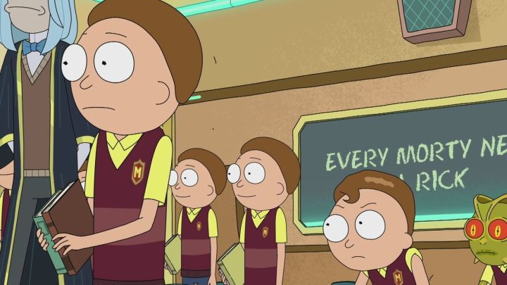
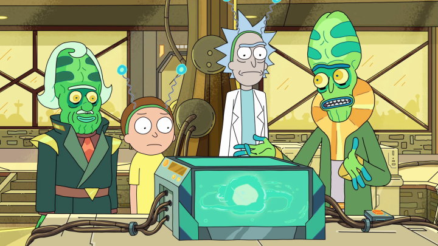
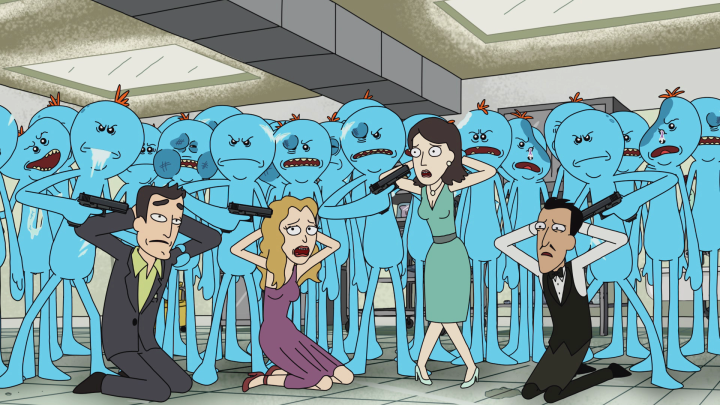
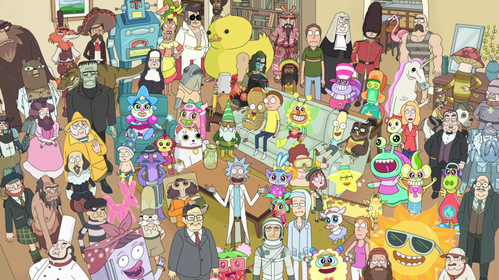
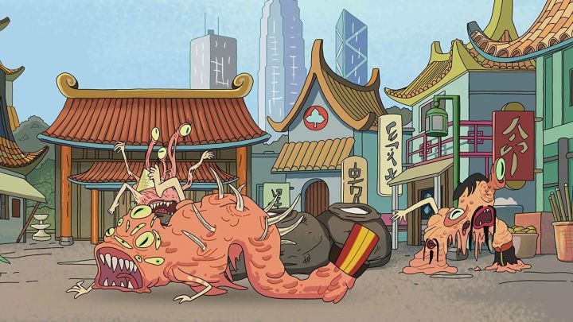
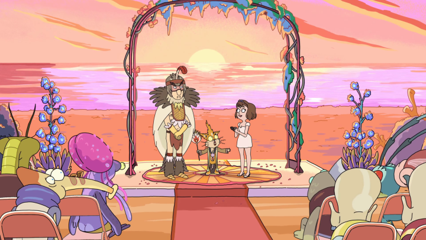
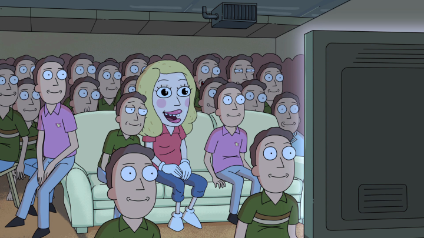
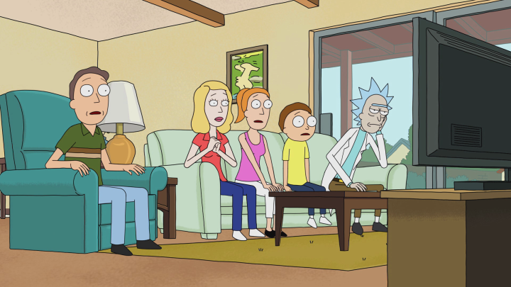
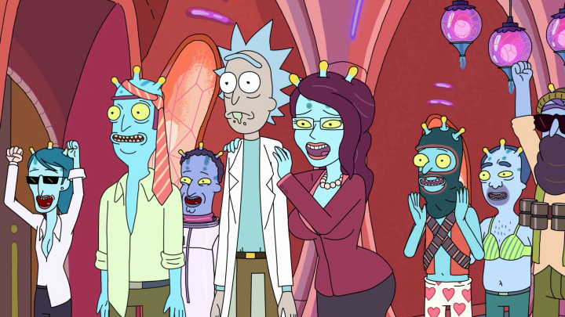
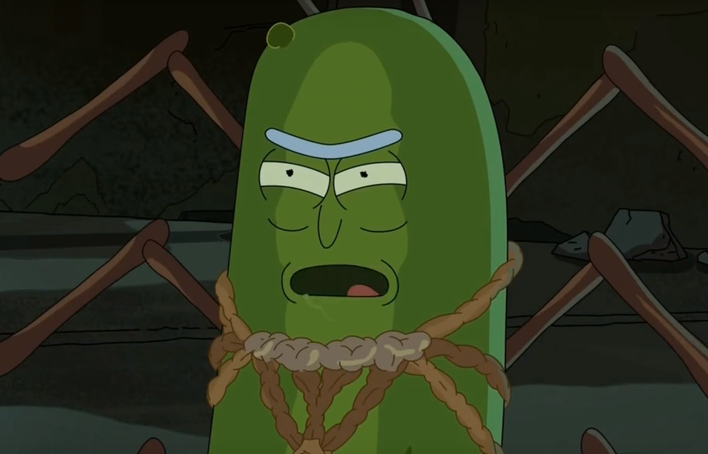

Os 10 melhores episódios de Rick and Morty
Com apenas três temporadas, Rick and Morty já é reconhecido como uma das melhores animações adultas de todos os tempos. É difícil superar a mistura de narrativa de alta qualidade, humor absurdo e personagens icônicos, mesmo que os fãs tenham que esperar meses -- ou até anos -- entre novos episódios.
A Adult Swim recentemente renovou a série para ter mais 70 episódios. O co-criador Justin Roiland disse que isso permitirá que ele e Dan Harmon comecem a produzir novas temporadas com mais velocidade e mais consistência. Infelizmente, ainda não se sabe quando a quarta temporada será lançada.
Enquanto esperamos a concretização da promessa, vamos ver os 10 melhores episódios das aventuras de Rick e Morty até o momento.
10. "The Ricklantis Mixup" (S3E7)

Esse episódio da terceira temporada é um caso de resistir às expectativas da melhor maneira possível. Trata-se de uma aventura de Rick e Morty ao reino aquático de Atlantis. "The Ricklantis Mixup" quase ignorou a dupla para contar uma história contada em Citadel. Aqui vimos diversos outros Ricks e Mortys, muitos dos quais não vivem uma vida recheada de aventura e prazer. O final surpresa compensou uma informação anterior que não estava resolvida, preparando o terreno para um confronto que esperamos ver na temporada 4.
9. "The Ricks Must Be Crazy" (S2E6)

Já se perguntou como o Rick dá energia à sua versátil espaçonave? Esse episódio responde essa pergunta, levando Rick e Morty em uma jornada dentro do microverso que alimenta a bateria do veículo de Rick. Conforme Rick brigava com seu rival microscópico Zeep Zanflorp (Stephen Colbert), a série aborda a futilidade da existência e os incríveis sacrifícios que fazem o estilo de vida de Rick ser possível. Enquanto isso acontecia, o episódio ainda cria uma hilária história secundária em que a nave de Rick faz de tudo para manter Summer protegida. Tudo mesmo.
8. "Meeseeks and Destroy" (S1E5)

Esse foi o primeiro episódio que provou que personagens secundários como Beth e Jerry poderiam destacar-se a Rick e Morty, dadas as circunstâncias corretas. Embora a tentativa má-sucedida de Morty de escolher uma aventura seja memorável (e traumatizadora), o verdadeiro destaque é Mr. Meeseeks, um faz-tudo cuja breve existência é devota a ajudar os outros a atingirem seus objetivos. Ajudar Beth encontrar satisfação emocional é mais fácil do que ensinar Jerry a acertar tacadas em um jogo de golfe. Boa, Jerry.
7. "Total Rickall" (S2E4)

"Total Rickall" realmente capta tudo que faz de Rick and Morty um ótimo seriado. Sua premissa é ridiculamente esperta, com o lar dos Smith sendo invadido por um parasita alienígena que implanta memórias falsas na mentes dos hóspedes. O episódio apresenta diversos personagens inéditos, de Hamurai a Sleepy Gary e Photography Raptor. Há também uma rápida transição de um tom alegre a um drama emocional conforme a família Smith sente o impacto de ter suas memórias destroçadas. Mas comparado a Mr. Poopybutthole, eles se saíram bem.
6. "Rick Potion No. 9" (S1E6)

Como todas as novas séries, Rick and Morty passou por alguns desafios para crescer nos episódios iniciais. No entanto, a animação acertou seu tom em "Rick Potion No. 9", atingindo o equilíbrio entre ficção científica, humor esdrúxulo e niilismo brilhante pelo qual é conhecida. As tentativas de Morty de fazer Jessica apaixonar-se por ele não funcionam, resultando em um final chocante em que Rick e seu neto precisam abandonar sua dimensão infestada para sempre. Mesmo duas temporadas depois, os personagens ainda sentem os efeitos da mudança dramática.
5. "The Wedding Squanchers" (S2E10)

Muitos dos melhores episódios de Rick and Morty têm acontecimentos inesperados próximos ao final, e "The Wedding Squanchers" não é exceção. O que começa com uma leve celebração do casamento de Birdperson e Tammy, rapidamente torna-se um caos imenso uma vez que a Galactic Federation encontra Rick. Com a Terra sendo ocupada e a família Smith com dificuldades para se adaptar a um novo planeta, Rick não tem escolha a não ser sacrificar-se em um dos momentos mais emotivos de toda a série. Um belo jeito de encerrar a temporada.
4. "Mortynight Run" (S2E2)

Em "Mortynight Run" a dupla de aventureiros desentendem-se quando Morty insiste em proteger um alien chamado "Fart" (Jermaine Clement). Naturalmente, há mudanças inesperadas ao longo do episódio. Mas de muitas maneiras, são os pequenos detalhes que o destacam, desde a incrível apresentação musical inspirada em David Bowie até a experiência de Morty com o game de arcade Roy: A Life Well Lived. O episódio também traz o que pode ser a melhor história secundária de Jerry, já que o personagem encontra diversos de seus alter-egos em uma creche exclusiva.
3. "Rixty Minutes" (S1E8)

Apenas Rick and Morty poderia ter um episódio inteiro sobre os personagens principais assistindo TV e ser um dos melhores já criados. Aqui, a família Smith é introduzida a uma rede interdimensional de canais, abrindo o escopo de péssimos programas a um multiverso inteiro. O episódio apresenta diversos clipes bizarros, com personagens icônicos como Ants in my Eyes Johnson, Two Brothers e Gazorpazorpfield. No entanto, o episódio ainda mostra certa profundidade, com Jerry e Beth encarando problemas ao vislumbrar suas vidas alternativas, e Morty consolando Summer ao revelar os trágicos eventos de "Rick Potion No. 9".
2. "Auto Erotic Assimilation" (S2E3)

Esse episódio conta com uma das melhores narrativas da série até o momento, com Rick reencontrando sua ex-amante Unity (Christina Hendricks), uma consciência compartilhada entre corpos distintos, que povoa um mundo inteiro. Conforme Rick e os bilhões de seres iniciam uma grandiosa orgia, fica claro porque os dois não funcionaram da primeira vez. O final trágico desse episódio é uma experiência triste, com o magoado Rick considerando suicídio. É um poderoso lembrete que por trás das frases engraçadas e genialidade, há um homem solitário e instável.
1. "Pickle Rick" (S3E3)

Aqui está o episódio que gerou milhares de memes. Rick iniciou sua aventura mais estranha até o momento quando ele se tornou um picles consciente para evitar a terapia familiar. Após alguns momentos memoráveis com ratos mortos, até Rick foi forçado a admitir que ele foi longe demais. A série não fica mais louca ou exagerada do que isso. Esse episódio foi o responsável pela série receber o Emmy de melhor série animada.